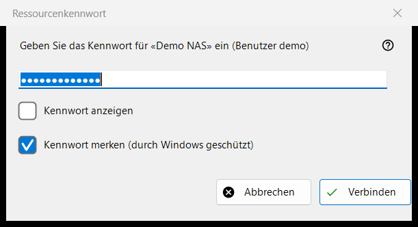
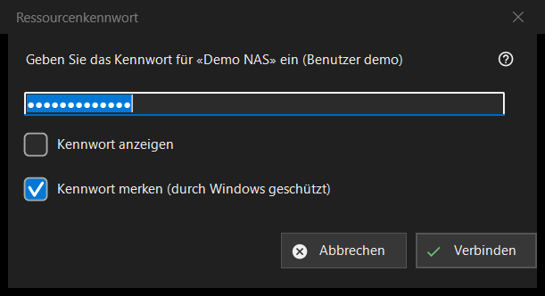

Ressourcenkennwort
Verwendungszweck
Fragt nach dem Kennwort einer gespeicherten Ressource, also eines Servers oder Netzwerkordners. Das Fenster öffnet sich, wenn Sie eine Ressource öffnen, deren Kennwort nicht gespeichert ist, wenn das gespeicherte abgelehnt wird und wenn ein Zielordner auf einem Server oder ein Import das Kennwort braucht; bei einem durch eine PIN geschützten Ordner trägt es die Überschrift «Ressourcen-PIN».


In dieser Reihenfolge
- Geben Sie das Kennwort ein; es wird verdeckt, «Kennwort anzeigen» macht es sichtbar.
- Entscheiden Sie, ob «Kennwort merken (durch Windows geschützt)» angehakt bleibt.
- Drücken Sie «Verbinden» (Eingabetaste) oder «Abbrechen» (Esc), um aufzuhören.
Die Elemente
Das Kennwort
Die Abfrage nennt die Ressource und den Benutzer. Das Kennwort wird genau so verwendet, wie Sie es eingeben, Leerzeichen eingeschlossen. Ein leeres Feld ergibt «Geben Sie das Kennwort ein». «Kennwort anzeigen» ist am Anfang ausgeschaltet.
Kennwort merken
Das Kästchen ist standardmäßig angehakt. Ist es angehakt, wird das Kennwort von Windows für Ihr Konto verschlüsselt gespeichert, und zwar erst, nachdem eine Verbindung es bestätigt hat; ist es nicht angehakt, bleibt das Kennwort nur für den aktuellen Lauf im Arbeitsspeicher. Das Kästchen ist ausgeblendet, wo das Kennwort ohnehin gespeichert wird, etwa beim Import einer Einstellungsdatei, und im PIN-Modus.
Ein abgelehntes Kennwort
Hat der Server das vorige Kennwort abgelehnt, steht eine Zeile «Das Kennwort wurde nicht akzeptiert. Geben Sie es erneut ein.» im Fenster, und es fragt erneut.
PIN-Modus
Bei einem durch eine PIN geschützten Ordner lautet die Überschrift «Ressourcen-PIN», und die Abfrage verlangt die PIN der genannten Ressource. Es gibt kein Kästchen zum Merken, und eine abgelehnte PIN ergibt «Die PIN wurde abgelehnt. Bitte erneut eingeben.»